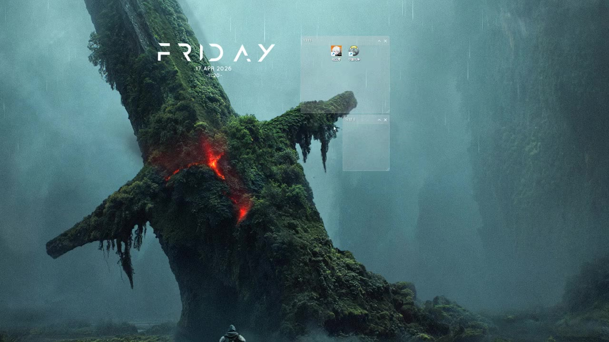
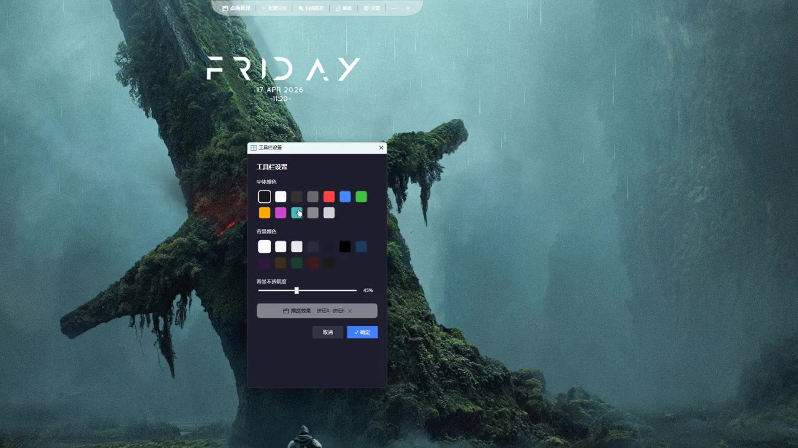

给自己的桌面
做一个整理器
我想要的其实很简单：桌面干净一点、看着舒服一点、用着别别扭。 试过的工具不是太丑，就是会把文件挪走。所以我自己做了这个—— 中间返工了不知道多少次，这个页面把它完整记下来。
桌面越用越乱，而现有工具都不合我意
我的桌面常年堆着论文、简历、设计稿和随手存的文件，图标铺满两屏， 找一个 PDF 要扫半天。用系统自带的新建文件夹去分类，结果只是多了几个文件夹压在图标里， 更乱。
找过的整理工具，基本都有两个问题： 一是丑——方方正正的窗口，跟我的壁纸格格不入； 二是不敢用——有的会把文件真的挪进别的目录，点错一下东西就找不到了。
所以我给自己定了三个要求，后面所有取舍都围绕它们：
它长这样，用起来是这样


「好看」这件事，我是当需求做的
工具栏：藏起来才不碍事
鼠标移到屏幕顶部才滑出来，离开 1 秒自动收起。平时完全看不见，需要时才出现。
分组：能拖、能贴、能锁
拖动分组时，靠近别的分组会吸附对齐；排好之后可以锁定，避免手滑打乱。
配色：我自己调
字体颜色、背景颜色、背景透明度三档可调，配上不同的壁纸都还能看。
这部分最容易被当成"美化"，但它其实决定了我会不会每天用它。 一个不好看的桌面工具，我第二天就不想打开了。
五个"以为做完了"的时刻
界面画出来只花了一小部分时间。真正耗人的是：功能看起来有了， 一用就发现不对，然后推翻重来。下面这五个阶段是按当时实际遇到的顺序排的。
分组框做出来了，但图标拖不进去
- 问题
- 框画得很顺，把桌面文件拖进去却完全没反应——等于只有一个空壳子。
- 怎么改
- 先退一步想清楚"拖进去"到底该发生什么：文件不动，只是被这个框"认领"。方向定下来之后才重新做。
- 确认
- 用真实的桌面快捷方式和普通文件各试一遍，重启之后再看还在不在。
图标进得去了，双击却打不开
- 问题
- 图标显示在框里很好看，但双击没有任何反应。这个 bug 最尴尬：看起来已经做完了。
- 怎么改
- 把"拖动排序"和"双击打开"两件事拆开处理，之前它们互相抢事件，导致双击被吃掉。
- 确认
- 双击、右键、拖出分组、拖到另一个分组——四种操作逐个走一遍。
按一下「显示桌面」，分组全被收走
- 问题
- 这本来是个桌面工具，结果点"显示桌面"就消失——最需要看桌面的时候它没了。
- 怎么改
- 想明白了：它不该是"浮在桌面上的窗口"，而应该是"桌面的一部分"。改成挂到桌面的壁纸层之后，这个问题才真正解决。
- 确认
- 反复按「显示桌面」和切换窗口，确认分组既不会被收走，也不会挡住正常工作。
托盘图标不出现，程序也关不掉
- 问题
- 点关闭以为退出了，其实还在后台；托盘里又找不到图标，只能去任务管理器结束进程。
- 怎么改
- 把"关闭"和"退出"分成两个动作，托盘菜单里给一个明确的退出入口。
- 确认
- 从托盘退出后确认进程真的结束，再重新打开，配置还在。
在我电脑上能跑，在别人电脑上装不上
- 问题
- 发给朋友试，第一步就卡住：要装 .NET、缺文件、也没有卸载方式。
- 怎么改
- 改成自包含单文件（135 MB → 63.2 MB），再补一个安装包：装到当前用户、不用管理员权限、卸载干净。
- 确认
- 自己走一遍"安装 → 使用 → 卸载"，卸载后确认目录、快捷方式、开机自启都清掉了。
有一条我始终没让步
最后交出去的是什么
三个形态：单文件 exe（双击即用）、便携 ZIP、安装包（开始菜单 + 可选开机自启 + 干净卸载）。 安装包只对当前用户生效、不弹 UAC——一个桌面小工具不该要求管理员权限。
做完之后我改掉的三个习惯
1. 先定"怎样算做完"，再动手。 前面几个阶段都吃过这个亏：功能做出来了，才发现自己根本没定义过验收标准， 于是返工。后来我习惯先写下"点下去应该发生什么"，再开始做。
2. 用别人的路径测，不用自己的路径测。 我熟悉每个图标在哪，所以永远测不出"找不到"的问题。 后来我强迫自己按第一次用的人的路径走一遍，才暴露出双击和关闭的问题。
3. 交付也是需求的一部分。 一开始只想着"能跑"，没想过"别人装不上"。补完安装、卸载、日志之后， 这东西才算真的做完——这一点在任何 2B 产品上都一样。
这个作品能说明什么
- 能把一个模糊的"我想要个干净的桌面"拆成可执行的要求。
- 对"看起来能用"保持怀疑，习惯回到真实操作里验证。
- 知道难点在哪、需要什么支持，能和实现的人把话说清楚。